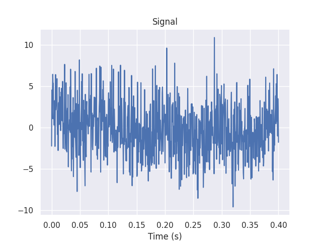
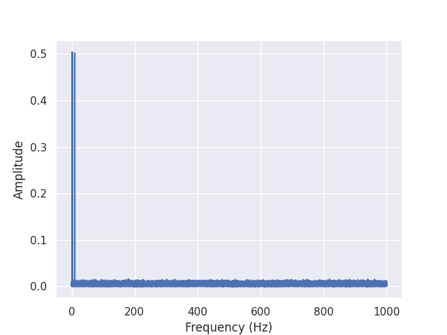
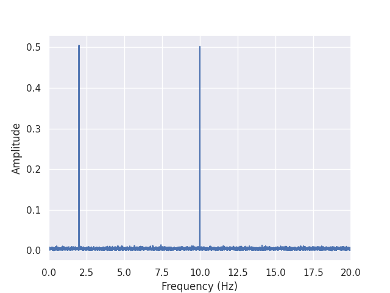
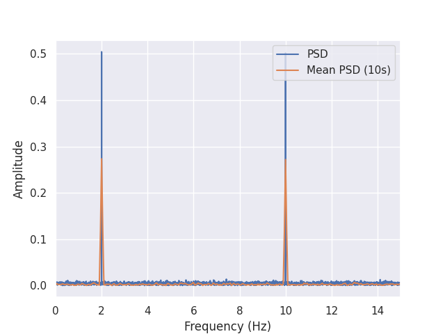

Note
Click here to download the full example code
Power spectral density
See the documentation of Pynapple for instructions on installing the package.
Warning
This tutorial uses matplotlib for displaying the figure
You can install all with pip install matplotlib requests tqdm seaborn
Now, import the necessary libraries:
mkdocs_gallery_thumbnail_number = 3
import matplotlib.pyplot as plt
import numpy as np
import seaborn
seaborn.set_theme()
import pynapple as nap
Generating a signal
Let's generate a dummy signal with 2Hz and 10Hz sinusoide with white noise.
F = [2, 10]
Fs = 2000
t = np.arange(0, 200, 1/Fs)
sig = nap.Tsd(
t=t,
d=np.cos(t*2*np.pi*F[0])+np.cos(t*2*np.pi*F[1])+np.random.normal(0, 3, len(t)),
time_support = nap.IntervalSet(0, 200)
)
Let's plot it

Out:
Computing power spectral density (PSD)
To compute a PSD of a signal, you can use the function nap.compute_power_spectral_density. With norm=True, the output of the FFT is divided by the length of the signal.
Pynapple returns a pandas DataFrame.
Out:
0
0.000 -0.001813+0.000000j
0.005 0.002033-0.003192j
0.010 -0.000215+0.002576j
0.015 -0.002483-0.004215j
0.020 0.002834-0.003674j
... ...
999.975 -0.006983-0.001434j
999.980 -0.002011-0.001679j
999.985 0.002736+0.000170j
999.990 0.002621-0.002914j
999.995 0.000777+0.000515j
[200000 rows x 1 columns]
It is then easy to plot it.

Out:
Note that the output of the FFT is truncated to positive frequencies. To get positive and negative frequencies, you can set full_range=True.
By default, the function returns the frequencies up to the Nyquist frequency.
Let's zoom on the first 20 Hz.
plt.figure()
plt.plot(np.abs(psd))
plt.xlabel("Frequency (Hz)")
plt.ylabel("Amplitude")
plt.xlim(0, 20)

Out:
We find the two frequencies 2 and 10 Hz.
By default, pynapple assumes a constant sampling rate and a single epoch. For example, computing the FFT over more than 1 epoch will raise an error.
double_ep = nap.IntervalSet([0, 50], [20, 100])
try:
nap.compute_power_spectral_density(sig, ep=double_ep)
except ValueError as e:
print(e)
Out:
Computing mean PSD
It is possible to compute an average PSD over multiple epochs with the function nap.compute_mean_power_spectral_density.
In this case, the argument interval_size determines the duration of each epochs upon which the FFT is computed.
If not epochs is passed, the function will split the time_support.
In this case, the FFT will be computed over epochs of 10 seconds.
Let's compare mean_psd to psd. In both cases, the ouput is normalized.
plt.figure()
plt.plot(np.abs(psd), label='PSD')
plt.plot(np.abs(mean_psd), label='Mean PSD (10s)')
plt.xlabel("Frequency (Hz)")
plt.ylabel("Amplitude")
plt.legend()
plt.xlim(0, 15)

Out:
As we can see, nap.compute_mean_power_spectral_density was able to smooth out the noise.
Total running time of the script: ( 0 minutes 1.187 seconds)
Download Python source code: tutorial_pynapple_spectrum.py